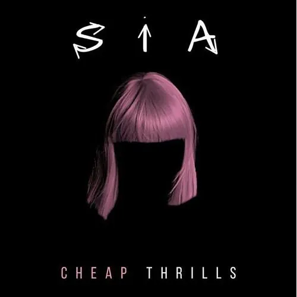

CHANDELIER SONG LYRICS
song by SIA
CLICK HERE FOR VIDEO

[Verse 1]
Party girls don't get hurt
Can't feel anythin', when will I learn?
I push it down, I push it down
I'm the one for a good time call
Phone's blowin' up, ringin' my doorbell
I feel the love, I feel the love
[Pre-Chorus]
One, two, three, one, two, three, drink
One, two, three, one, two, three, drink
One, two, three, one, two, three, drink
Throw 'em back 'til I lose count
[Chorus]
I'm gonna swing from the chandelier
From the chandelier
I'm gonna live like tomorrow doesn't exist
Like it doesn't exist
I'm gonna fly like a bird through the night
Feel my tears as they dry
I'm gonna swing from the chandelier
From the chandelier
[Post-Chorus]
But I'm holdin' on for dear life
Won't look down, won't open my eyes
Keep my glass full until mornin' light
'Cause I'm just holdin' on for tonight
Help me, I'm holdin' on for dear life
Won't look down, won't open my eyes
Keep my glass full until mornin' light
'Cause I'm just holdin' on for tonight, on for tonight
You might also like
ballad of a homeschooled girl
Olivia Rodrigo
Get Low
O SIDE MAFIA
Big Foot (A Cappella)
Nicki Minaj
[Verse 2]
Sun is up, I'm a mess
Gotta get out now, gotta run from this
Here comes the shame, here comes the shame (Ahh)
[Pre-Chorus]
One, two, three, one, two, three, drink
One, two, three, one, two, three, drink
One, two, three, one, two, three, drink
Throw 'em back 'til I lose count
[Chorus]
I'm gonna swing from the chandelier
From the chandelier
I'm gonna live like tomorrow doesn't exist
Like it doesn't exist
I'm gonna fly like a bird through the night
Feel my tears as they dry
I'm gonna swing from the chandelier
From the chandelier
[Post-Chorus]
But I'm holdin' on for dear life
Won't look down, won't open my eyes
Keep my glass full until mornin' light
'Cause I'm just holdin' on for tonight
Help me, I'm holdin' on for dear life
Won't look down, won't open my eyes
Keep my glass full until mornin' light
'Cause I'm just holdin' on for tonight, on for tonight
[Outro]
On for tonight
'Cause I'm just holdin' on for tonight
Oh, I'm just holdin' on for tonight
On for tonight, on for tonight
'Cause I'm just holdin' on for tonight
'Cause I'm just holdin' on for tonight
Oh, I'm just holdin' on for tonight
On for tonight, on for tonight